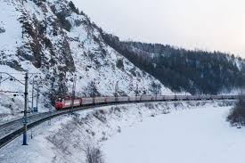

Viajei para a Rússia. Para onde vou?
Descubra os encantos da Rússia: cultura, história e paisagens deslumbrantes!
Sobre nós
Somos uma equipe apaixonada por compartilhar as belezas e riquezas culturais da Rússia.
Nosso objetivo é proporcionar informações detalhadas e inspiradoras sobre os principais pontos turísticos do país.
Dentre eles:
- Moscow
- São Petersburgo
- Kazan
- Síberia
- Cáucaso
Catedral de São Basílio

A Catedral de São Basílio, localizada na Praça Vermelha em Moscou, é um dos marcos mais icônicos da Rússia. Construída no século XVI por ordem do czar Ivan, o Terrível, sua arquitetura colorida representa o auge da arte religiosa russa.
Kremlin de Moscou

O Kremlin de Moscou é uma fortaleza histórica no coração da capital russa. Sede do governo e residência presidencial, abriga catedrais e palácios importantes, sendo Patrimônio Mundial da UNESCO.
Praça Vermelha

A Praça Vermelha é o centro histórico de Moscou, cercada por construções emblemáticas como o Kremlin e a Catedral de São Basílio. Foi palco de inúmeros eventos marcantes da história russa.
Teatro Bolshoi

O Teatro Bolshoi é um dos mais prestigiados teatros de ópera e balé do mundo. Fundado em 1776, possui arquitetura imponente e tradição artística reconhecida internacionalmente.
Museu Hermitage

O Museu Hermitage, em São Petersburgo, é um dos maiores museus do mundo, com mais de 3 milhões de obras. Ocupa o famoso Palácio de Inverno e abriga pinturas de grandes mestres europeus.
Palácio de Inverno

O Palácio de Inverno foi residência oficial dos czares russos e hoje integra o Hermitage. Sua arquitetura barroca e interiores luxuosos o tornam um dos prédios mais impressionantes da Europa.
Lago Baikal

O Lago Baikal, na Sibéria, é o lago mais profundo e antigo do mundo. Suas águas extremamente claras e paisagens naturais fascinantes atraem turistas o ano inteiro.
Fortaleza de São Pedro e São Paulo

A Fortaleza de São Pedro e São Paulo marca o local de fundação de São Petersburgo. Abriga o mausoléu dos czares da dinastia Romanov e construções militares históricas.
Ferrovia Transiberiana
A Ferrovia Transiberiana é a maior linha ferroviária do mundo, cruzando a Rússia de Moscou até o extremo leste. A rota oferece vistas únicas de florestas, montanhas e regiões geladas.
Palácio de Catarina

O Palácio de Catarina, famoso pela deslumbrante Sala de Âmbar, serviu como residência de verão da família imperial. Sua arquitetura barroca é uma das mais belas da Rússia.
Monte Elbrus

O Monte Elbrus, no Cáucaso, é o ponto mais alto da Europa. Popular entre alpinistas, apresenta paisagens nevadas e faz parte dos famosos Sete Cumes do montanhismo.
Ilha de Kizhi

A Ilha de Kizhi é conhecida por suas igrejas e construções de madeira do século XVIII. O conjunto arquitetônico Kizhi Pogost é Patrimônio da Humanidade pela UNESCO.
Entre em contato
Quer compartilhar experiências e pontos interessantes sobre a Rússia?
Preencha o formulário abaixo: